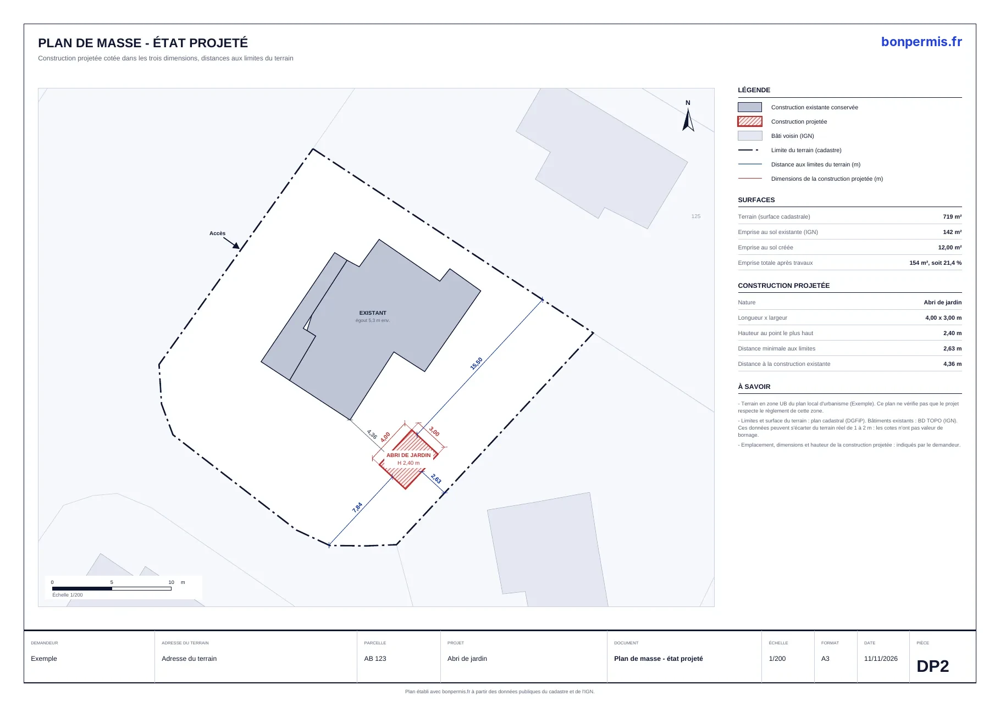

Comment faire un plan de masse
Sept étapes, du plan cadastral au plan coté. À la main, ou en deux minutes avec notre outil.
Récupérez le plan de votre terrain
Imprimez l'extrait du plan cadastral de votre parcelle, depuis cadastre.gouv.fr ou le Géoportail. Vous y trouvez les limites du terrain, la maison et les voisins.
Choisissez une échelle
Entre le 1/100 et le 1/500 en général : tout le terrain doit tenir sur la feuille. Au 1/200, 1 cm sur le plan vaut 2 m sur le terrain. Écrivez l'échelle sur le plan.
Tracez le terrain et ce qui existe
Les limites avec leurs longueurs, la maison, le garage, la piscine. Indiquez la rue et l'entrée du terrain.
Dessinez votre projet et cotez-le
Sa longueur, sa largeur et sa hauteur : c'est le plan « coté dans les trois dimensions ». Distinguez-le de l'existant par une couleur ou des hachures.
Mesurez les distances aux limites
Entre le projet et chaque limite du terrain, et entre le projet et la maison. C'est ce que la mairie regarde en premier.
Ajoutez l'accès, les réseaux et les plantations
Le chemin depuis la rue, les raccordements si le projet en a besoin, les arbres gardés, supprimés ou plantés.
Terminez par les repères
La flèche du nord, une légende, l'endroit du trait de coupe, et les endroits d'où vous prenez les photos du dossier.

Les erreurs qui font réclamer la pièce
- Pas de cotesUn plan à l'échelle mais sans dimensions écrites : la mairie ne peut rien vérifier.
- Pas de distances aux limitesC'est pourtant la première règle que la mairie contrôle.
- La hauteur oubliéeElle fait partie des trois dimensions demandées.
- Une partie du terrain coupéeLe plan doit montrer la parcelle entière.
- Un plan juste, mais un projet interditLe plan de masse ne dit pas si le règlement de votre mairie autorise le projet.
À lire aussi : Trois exemples de plan de masse · Le plan de coupe · Toutes les pièces du dossier
Questions fréquentes
Où trouver le plan de son terrain ?
Sur cadastre.gouv.fr ou sur le Géoportail : le plan cadastral est gratuit. Il donne les limites de la parcelle et les bâtiments, sans valeur de bornage.
Quel logiciel pour faire un plan de masse ?
Aucun n'est imposé : papier millimétré, tableur, logiciel de dessin, ou notre outil en ligne. Ce qui compte, c'est l'échelle et les cotes.
Combien de temps faut-il ?
À la main, comptez une à deux heures avec les mesures. Avec notre outil, environ deux minutes une fois l'adresse saisie.
Le plan de masse suffit-il pour déposer ?
Non. Une déclaration préalable demande aussi un plan de situation, et selon le projet un plan de coupe, les façades, une insertion et des photos.